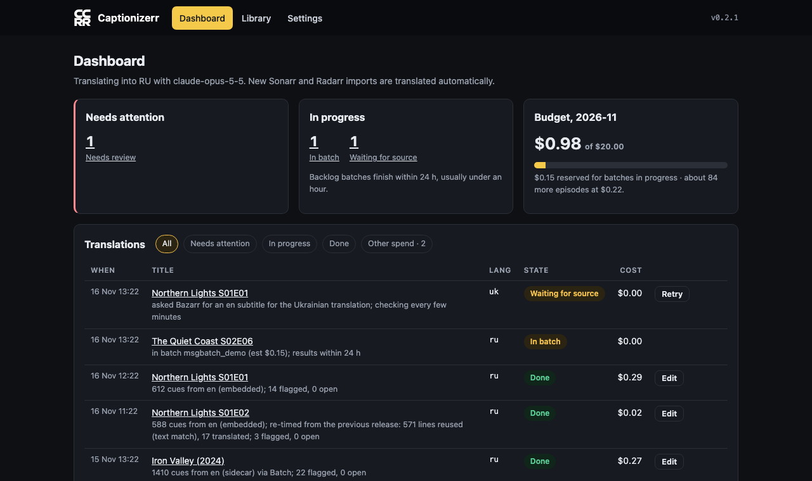
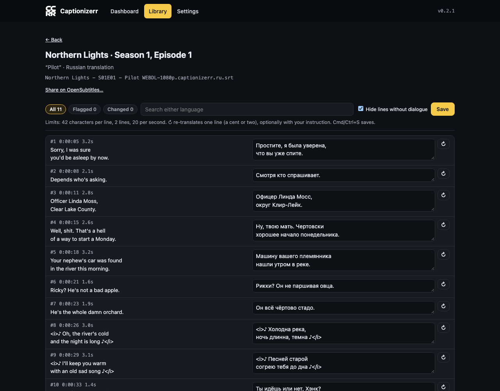
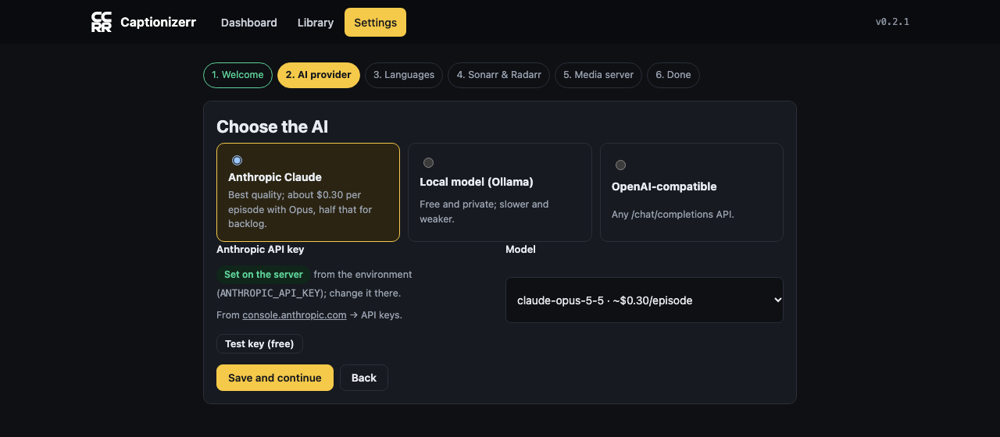
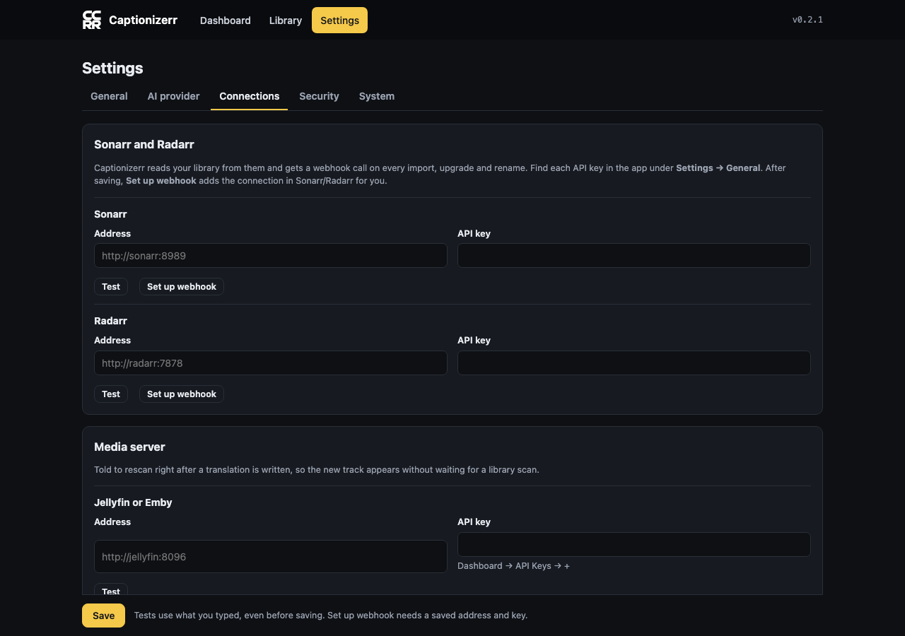

Subtitles in your language,
timed to your file.
Captionizerr translates the subtitle track that ships with each video using an LLM, automatically on every Sonarr and Radarr import. The timing is exact for your release, and the translation keeps the original's voice: who speaks to whom, the jokes, the swearing, the songs.
Two common ways to get subtitles in your language, and where each falls short
Captionizerr takes a third path: it translates the subtitle file that came with your video, with the whole episode in view.
Downloaded subtitles drift
Community subtitles are often timed to a different release or cut. They run seconds early or late, or don't exist in your language at all.
Machine translation flattens
Line-by-line translation can't know who's speaking. You get the wrong grammatical gender, the wrong "you", softened swearing, literal idioms, and songs turned into prose.
Captionizerr: neither problem
It starts from your video's own subtitle track, so the timing is exact. The model reads the whole episode at once, plus series notes on characters and names.
The same scene, translated two ways
An original scene written for this page, translated English → Russian. Officer Linda Moss knocks on the door of a farmer she has never met, Dale Pruitt. Her partner Hank waits in the car.
| English source | Literal machine translation (illustrative) | Captionizerr (real output) |
|---|---|---|
| Sorry, I was sure you'd be asleep by now. Linda, to the stranger |
Извини, я был уверен, что ты уже спишь.Masculine "был уверен" for a woman; familiar "ты" to a stranger | Простите, я была уверена, что вы уже спите.Feminine "была уверена", polite "вы": the model knows who's speaking to whom |
| Well, shit. That's a hell of a way to start a Monday. Dale |
Ну, дерьмо. Это адский способ начать понедельник.Word-for-word calque; nobody talks like this | Ну, твою мать. Чертовски хорошее начало понедельника.As strong as the original, in natural speech (or softened, if you choose) |
| Your nephew's car was found in the river this morning. | Машину твоего племянника нашли утром в реке.Drops back to "ты" mid-conversation | Машину вашего племянника нашли утром в реке.Stays formal, consistently |
| Ricky? He's not a bad apple. He's the whole damn orchard. | Рикки? Он не плохое яблоко. Он весь чёртов сад.The idiom doesn't exist in Russian, so the joke dies | Рикки? Он не паршивая овца. Он всё чёртово стадо.Adapted to the Russian idiom ("black sheep → the whole flock"), so the joke still lands |
| ♪ Oh, the river's cold and the night is long / I'll keep you warm with an old sad song ♪ | ♪ О, река холодная, и ночь длинная / Я согрею тебя старой грустной песней ♪Prose; the rhyme is gone | ♪ Холодна река, ночь длинна, темна / Песней старой согрею тебя до дна ♪Rhymed verse in italics. Not perfect: "до дна" is a stretch; the editor's ↻ would offer another take |
| You coming or not, Hank? Linda, to her partner |
Ты идёшь или нет, Хэнк? | Ты идёшь или нет, Хэнк?Now "ты" is right: the series notes say Linda and Hank are on first-name terms |
The right column is Captionizerr's actual output for this scene (Claude Opus 5.5, low effort, with the series notes, 0 flagged lines, under 1¢), unedited: the same file as in the editor screenshot below. The middle column illustrates typical errors of sentence-by-sentence translation and was not produced by a specific product.
From import to subtitle, without you
Sonarr imports an episode
Its webhook tells Captionizerr right away, and Radarr does the same for films. You can also pick anything from the Library.
Captionizerr translates
It uses the video's own subtitle track, falling back to Bazarr when there is none. The whole episode goes in one request, then a validator checks every line.
The track appears
Episode.captionizerr.ru.srt is written next to the video, and your media server rescans that folder.
flowchart TD
subgraph d0_Arr["Your *arr stack"]
d0_S[Sonarr]
d0_R[Radarr]
d0_B[Bazarr]
end
subgraph d0_CZ["Captionizerr"]
d0_W[Web UI + API]
d0_Q[Job queue]
d0_P[Translation pipeline]
end
d0_L[(Media library)]
d0_AI[[AI provider]]
d0_M[Jellyfin / Emby / Plex]
d0_S -->|webhook| d0_W
d0_R -->|webhook| d0_W
d0_W --> d0_Q --> d0_P
d0_P -->|reads track| d0_L
d0_P -->|no subtitle? ask| d0_B
d0_B -->|downloads + syncs| d0_L
d0_P <-->|translate| d0_AI
d0_P -->|writes .captionizerr.lang.srt| d0_L
d0_P -->|rescan| d0_M
style d0_P fill:#FF9900,color:#fff
style d0_L fill:#3B48CC,color:#fff
flowchart TD
d1_A([Import webhook]) --> d1_C{Source subtitle?}
d1_C -->|Embedded text track| d1_E[Extract]
d1_C -->|File next to video| d1_F[Use it]
d1_C -->|None| d1_G[Ask Bazarr]
d1_G -->|file arrives| d1_C
d1_E --> d1_I{Budget OK?}
d1_F --> d1_I
d1_I -->|No| d1_J[[Pause + notify]]
d1_I -->|Yes| d1_K[Translate]
d1_K --> d1_M[Write + rescan]
style d1_K fill:#FF9900,color:#fff
style d1_J fill:#D13212,color:#fff
flowchart TD
d2_A[Whole episode in one request] --> d2_E[Validator]
d2_E --> d2_F{Flagged lines?}
d2_F -->|Yes, up to 2 rounds| d2_G[Fix only those]
d2_G --> d2_E
d2_F -->|No| d2_H([Done])
d2_F -->|Still flagged| d2_I([Needs review])
style d2_A fill:#FF9900,color:#fff
Upgrades are re-timed, not re-translated
When Sonarr replaces a WEB-DL with a Blu-ray, Captionizerr matches the previous translation line by line onto the new release, keeping your edits. Only new or changed lines go to the model, usually at $0.
Backlog at half price
Tick a whole season and choose Add to backlog. It goes out as one Anthropic Batch request at 50% of the price, usually back within the hour. Open batches count against your budget until they're paid.
A web UI that does the setup for you
No config file needed. Keys, connections and webhooks are set up in the browser, and each connection has a Test button. Screenshots use demo data; click one to enlarge it.




Everything in the box
Automatic
Webhooks on import, upgrade and rename. Choose per series whether it's translated, and into which languages.
Any source language
Embedded text track first, then a subtitle file next to the video, then Bazarr (download and sync). English can be a target too.
SRT and ASS
Anime-friendly: styles, signs, drawings and karaoke survive. Forced tracks (foreign-language scenes) get their own .forced file.
Series notes
A short "bible" drafted from the first episode: characters with gender and formality, a glossary and the tone. It keeps names consistent across episodes.
Editor + learning
Fix lines yourself or with ↻. "Learn from corrections" turns your edits into series notes.
Cost control
An estimate before every job, a monthly cap that pauses and notifies, and Batch at half price for the backlog.
Your choice of AI
Anthropic Claude (the quality reference), local models via Ollama (free and private), or any OpenAI-compatible API.
Media servers
Jellyfin, Emby and Plex are told to rescan as soon as a file is written.
Share, opt-in
After review, upload a translation to OpenSubtitles, always marked as an AI translation. Never automatic.
Ops-ready
Prometheus /metrics, ntfy spot-checks, daily housekeeping and a daily database snapshot.
Measurable quality
captionizerr eval re-translates excerpts you approved and scores them, so prompt or model changes are measured, not guessed.
Safe by design
It only ever creates its own *.captionizerr.* files and never overwrites or deletes anything else.
Cents per episode, measured
| Model | Per episode | Backlog (−50%) |
|---|---|---|
| Claude Opus 5.5 (default) | ~$0.31 | ~$0.16 |
| Claude Sonnet 5.5 | ~$0.15 | ~$0.08 |
| Claude Haiku 5.5 | ~$0.01 | ~$0.004 |
| Ollama (local) | $0 | n/a |
Opus vs a local 12B model
13 excerpts, scored against translations a viewer approved (chrF, higher is better):
Claude Opus 5.5: 72.5 · 0 flagged lines · about 1 min
Gemma 3 12B (16 GB Mac): 50.8 · 2 flagged · 11.5 min
The local model follows the plot, but keeps hearing-impaired tags, drops italics and misses context. Use 27B+ models for natural dialogue.
A typical 45–60 minute episode is about 16k input and 12k output tokens. A film costs about twice an episode. Series notes cost $0.05–0.15 once per series.
Running in five minutes
You need Docker and Sonarr and/or Radarr. Mount your media at the same path your *arr apps use.
mkdir captionizerr && cd captionizerr
curl -LO https://raw.githubusercontent.com/captionizerr/captionizerr/main/deploy/docker-compose.yml
# edit the media volume in docker-compose.yml, then:
docker compose up -d
Open http://<host>:8095. The setup wizard walks you through it:
Login
Optional; recommended if others can reach the port.
AI provider
Paste an Anthropic key and press Test key (free), or pick a local Ollama model.
Languages
e.g. de or ru, uk, plus a monthly budget.
Sonarr / Radarr
Address and key, Test, then Set up webhook.
Media server
Jellyfin/Emby or Plex, and optionally Bazarr.
The image ghcr.io/captionizerr/captionizerr runs on amd64 and arm64 (a Raspberry Pi 4/5 is plenty). Full guide: setup guide · configuration.
Your library and your keys stay yours
- Narrow writer. It only creates its own *.captionizerr.<lang>.srt|ass files, next to videos under your library roots. Nothing is ever overwritten or deleted.
- Write-only keys. Keys typed in the UI are stored with mode 600, never in the database, and never shown again. Keys from files or the environment take precedence.
- Hashed password. The UI password is a salted PBKDF2 hash. Ten failed attempts lock an address out for 15 minutes.
- Authenticated webhooks. They use HTTP Basic, so the key never goes in a URL.
- Cross-site protection. Requests from other tabs are refused, input paths are confined to the library, and redirects stay local.
- Non-root image. It runs as uid 1000 and contains no secrets. Secrets as files (*_FILE) keep keys out of docker inspect.
Made for home networks: put it behind HTTPS and a login before exposing it anywhere. See SECURITY.md.
Questions
Will it overwrite my existing subtitles?
No. It only writes files named <video>.captionizerr.<lang>.srt, with exclusive create, and never touches other files. If its own translation already exists, the job is skipped. The editor can replace only Captionizerr's own files, and backs up the previous version first.
What if a video only has image subtitles (PGS/VobSub)?
Image subtitles aren't OCR'd. With Bazarr connected, Captionizerr asks Bazarr to download and sync a text subtitle, waits for it, then translates. Without Bazarr the job ends as "No source".
Which languages work?
Any language the model knows, in both directions; English can be a target too, e.g. from a Japanese track. Built-in style rules exist for Russian, Ukrainian, German, Spanish and English. Chinese, Japanese and Korean targets get shorter lines and a slower reading speed. The untranslated-text check is strongest for Cyrillic targets; for other languages it catches lines left identical to the source.
Can I avoid the cloud entirely?
Yes. Choose Local model (Ollama) in Settings. Nothing leaves your network and nothing is billed. Quality depends heavily on model size; see the measurements above.
How do I stop it spending money?
Set a monthly cap. Jobs pause at the cap and you get a notification. Every job is estimated before it runs (token counting is free), and you can turn automatic translation off per series. Batch requests already in flight count against the cap.
Does it work with Plex and Emby?
Jellyfin is tested daily. Emby uses the same rescan API and Plex has its own folder refresh; both are implemented but not yet tested against real servers. Feedback is welcome.
Can I share translations?
Optionally, one file at a time, to OpenSubtitles, after you've reviewed it, and always flagged as an AI translation. Translations are derivative works of the dialogue, so check the site's rules first.